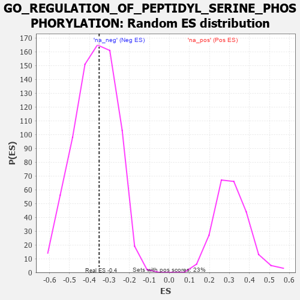

| | | Dataset | 7d |
| Phenotype | NoPhenotypeAvailable |
| Upregulated in class | na_neg |
| GeneSet | GO_REGULATION_OF_PEPTIDYL_SERINE_PHOSPHORYLATION |
| Enrichment Score (ES) | -0.35173696 |
| Normalized Enrichment Score (NES) | -0.9476205 |
| Nominal p-value | 0.5422627 |
| FDR q-value | 0.91270983 |
| FWER p-Value | 1.0 |
Table: GSEA Results Summary
 Fig 1: Enrichment plot: GO_REGULATION_OF_PEPTIDYL_SERINE_PHOSPHORYLATION
Fig 1: Enrichment plot: GO_REGULATION_OF_PEPTIDYL_SERINE_PHOSPHORYLATION
Profile of the Running ES Score & Positions of GeneSet Members on the Rank Ordered List
| PROBE | GENE SYMBOL | GENE_TITLE | RANK IN GENE LIST | RANK METRIC SCORE | RUNNING ES | CORE ENRICHMENT | | 1 | AXIN1 | | | 166 | 1.159 | 0.0460 | No |
| 2 | HGF | | | 276 | 0.870 | 0.0825 | No |
| 3 | GSK3A | | | 351 | 0.745 | 0.1162 | No |
| 4 | BAX | | | 387 | 0.711 | 0.1528 | No |
| 5 | STOX1 | | | 905 | 0.506 | 0.1169 | No |
| 6 | AKT1 | | | 1040 | 0.476 | 0.1274 | No |
| 7 | NCK2 | | | 1131 | 0.458 | 0.1425 | No |
| 8 | DOCK7 | | | 1398 | 0.410 | 0.1327 | No |
| 9 | FNIP1 | | | 1798 | 0.338 | 0.1020 | No |
| 10 | RAF1 | | | 2011 | 0.303 | 0.0928 | No |
| 11 | MIF | | | 2357 | 0.252 | 0.0639 | No |
| 12 | SMAD7 | | | 3369 | 0.093 | -0.0580 | No |
| 13 | NSD1 | | | 3779 | 0.031 | -0.1077 | No |
| 14 | SFRP2 | | | 4065 | -0.018 | -0.1425 | No |
| 15 | RPTOR | | | 4252 | -0.050 | -0.1631 | No |
| 16 | BAG4 | | | 4314 | -0.061 | -0.1672 | No |
| 17 | NTRK2 | | | 4543 | -0.104 | -0.1899 | No |
| 18 | PLCL2 | | | 4807 | -0.159 | -0.2138 | No |
| 19 | HDAC6 | | | 5183 | -0.244 | -0.2470 | No |
| 20 | PTEN | | | 5262 | -0.261 | -0.2417 | No |
| 21 | LATS1 | | | 5412 | -0.298 | -0.2433 | No |
| 22 | CALCR | | | 5730 | -0.386 | -0.2609 | No |
| 23 | STK4 | | | 6145 | -0.518 | -0.2831 | No |
| 24 | PAK1 | | | 6691 | -0.757 | -0.3081 | Yes |
| 25 | EGFR | | | 6708 | -0.765 | -0.2660 | Yes |
| 26 | PAQR3 | | | 6812 | -0.819 | -0.2316 | Yes |
| 27 | GPD1L | | | 7343 | -1.215 | -0.2283 | Yes |
| 28 | PDE4D | | | 7764 | -1.944 | -0.1690 | Yes |
| 29 | ARRB1 | | | 7935 | -3.377 | 0.0045 | Yes |
Table: GSEA details [plain text format]

Fig 2: GO_REGULATION_OF_PEPTIDYL_SERINE_PHOSPHORYLATION: Random ES distribution
Gene set null distribution of ES for GO_REGULATION_OF_PEPTIDYL_SERINE_PHOSPHORYLATION